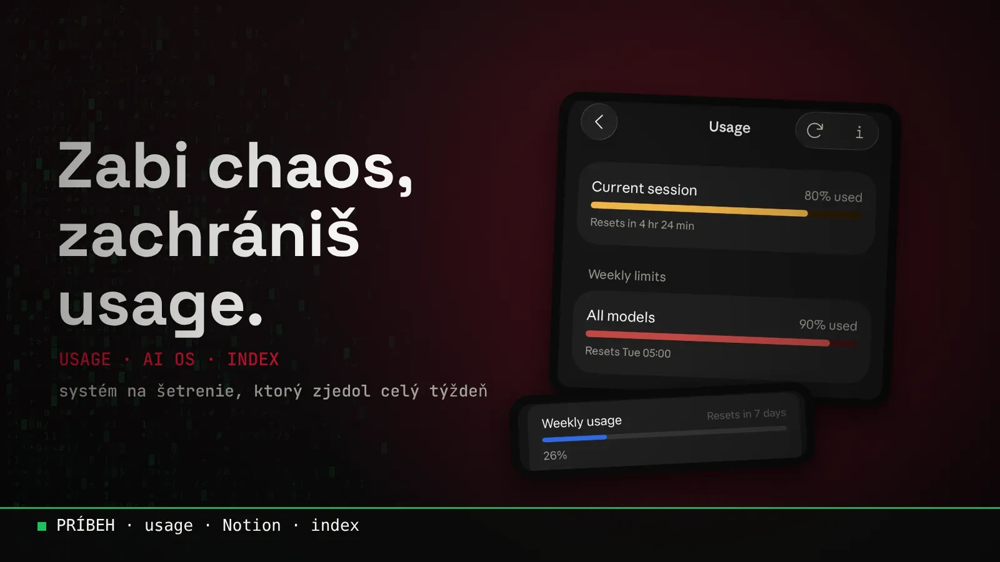
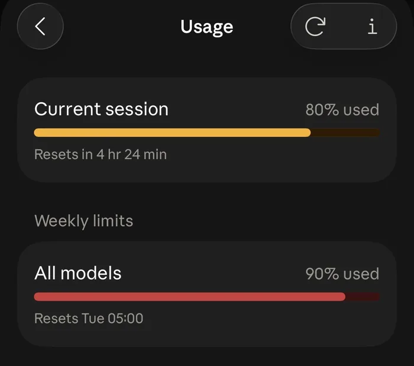
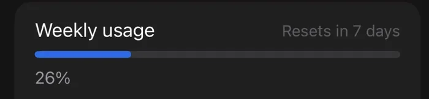
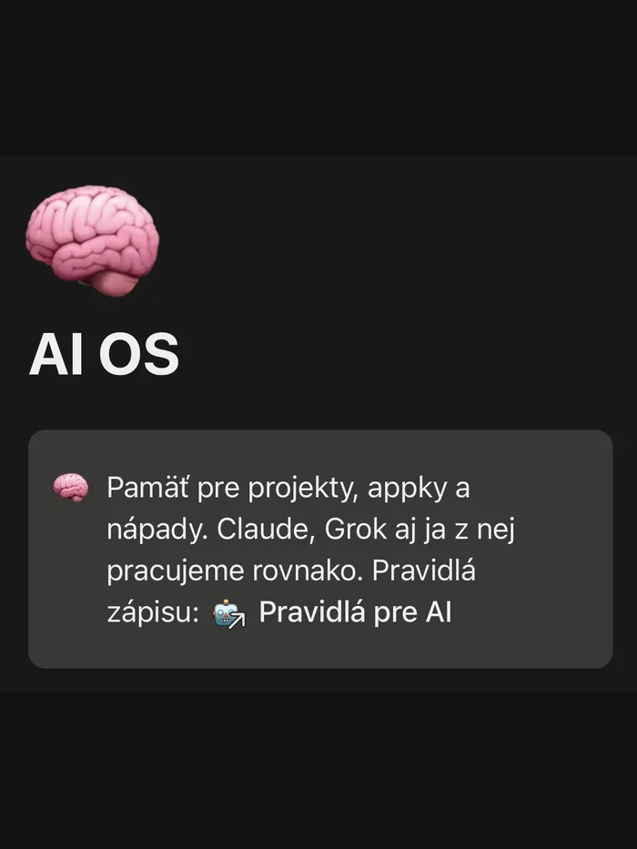
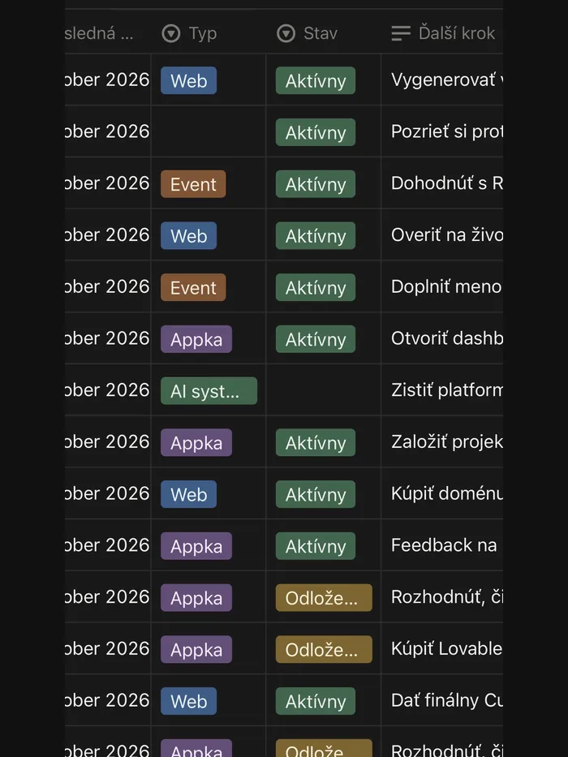
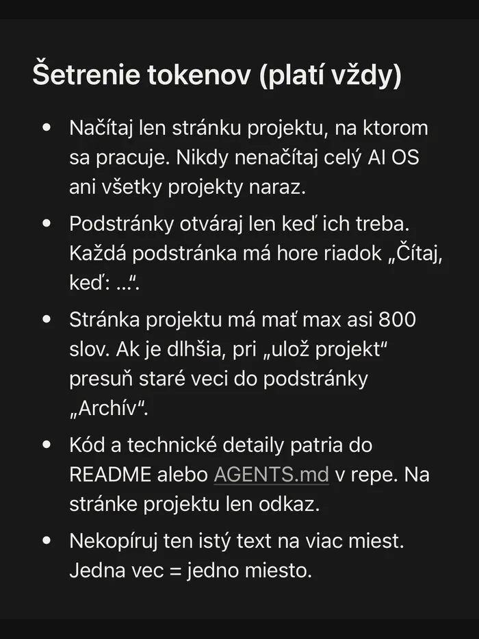
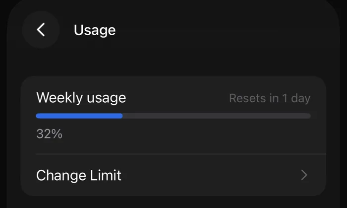

Blog ·
Postavil som systém na šetrenie usage. Zožral mi usage.
Chcel som mať projekty a nápady na jednom mieste, aby s nimi vedeli pracovať Claude aj Grok. Spravil som to tak, že mi to zjedlo týždenný limit za dva a pol dňa. Tu je, čo som sa naučil, a ako usage šetriť po ľudsky.

Pracujem s viacerými AI naraz: s Claude, s Grokom a občas aj s Gemini. Gemini je za mňa najslabšia, lebo ju musím presviedčať, aby sa vôbec pripojila na môj Google Drive.
Všetky však majú rovnakú slabinu: zabudnú, čo sme robili včera. V tomto článku ti ukážem, ako som na to prišiel, čo robím inak a dám ti tipy, ako si postrážiť usage.
Čo som chcel
Mal som nápady, appky a projekty rozhádzané po chatoch, poznámkach a repozitároch. Chcel som jedno miesto, kde bude všetko pokope. Hlavne aby som to videl ja sám, a zároveň aby sa naň dala napojiť AI a vedela z neho čítať aj doň písať.
Nevedel som, ako na to. Nie som programátor, tak som sa spýtal AI. Odporučila mi Notion: jednu hlavnú stránku, databázu projektov a stránku s pravidlami, ako sa tam má písať. Tak som si to spravil presne takto a nazval som to AI OS.
V databáze má každý projekt typ (web, event, appka, AI systém), stav (aktívny, odložený) a ďalší krok: jednu vetu o tom, čo sa má stať ako ďalšie. Keď sa k projektu vrátim po čase, nemusím nič hľadať ani spomínať.
Teraz ťa naučím 4 nové slová
Bez nich je zvyšok článku len kopa módnych slov. S nimi pochopíš, prečo sa mi to celé pokazilo.
- TokenKúsok textu, zhruba slabika až slovo. AI číta aj píše v tokenoch. Je to ako mince do automatu: neplatíš za čas, ale za kúsky textu.
- UsageTvoj limit na používanie AI: jeden na pár hodín (session) a jeden na týždeň. Je to ako nádrž v aute: míňa sa podľa záťaže, nie podľa toho, koľko hodín si sedel za volantom.
- Kontextové oknoVšetko, čo má AI v jednom chate práve pred sebou: správy, odpovede, otvorené stránky aj súbory. Je to jej pracovný stôl. Čím viac papierov na ňom leží, tým drahšie je každé ďalšie pohnutie.
- IndexKrátky zoznam „čo je kde“. Ako obsah v knihe: nečítaš celú knihu, aby si našiel kapitolu. Pozrieš obsah a otvoríš jednu stranu.
Kde som sa pomýlil
Mal som všetko v Notione na jednom mieste a myslel som si, že tým šetrím usage. Veď nemusím nič vysvetľovať dookola. Lenže AI si stránku neprečíta po vetách. Keď ju otvorí, dostane ju celú. Aj keď potrebuje jedinú vetu.
Prvý deň po týždennom resete som sa pustil do rozborov projektov. AI mala len čítať a dopisovať pár vecí. Ona prečítala všetky projekty naraz, zapisovala do viacerých stránok a ja som sledoval, ako sa mi hýbe ukazovateľ. Je to ako poslať stážistu, nech sa pozrie do jedného šanónu, a on ti vytlačí celý archív.


V Claude som mal týždenný limit preč za dva a pol dňa a v Groku som za prvý deň minul štvrtinu týždňa. Najhoršie je, že som ten systém postavil presne preto, aby som šetril.
Postavil som systém na šetrenie usage a on mi ho zožral.
Nový systém: index a poriadok
Obsah som nezmenil. Zmenil som pravidlo: namiesto „prečítaj všetko“ je teraz najprv index, potom len jedna stránka.
- 01Pozrie indextabuľka projektov: názov, typ, stav, ďalší krok
- 02Otvorí jeden projektlen ten, na ktorom sa práve pracuje
- 03Podstránky len keď trebahore majú riadok „Čítaj, keď: …“
A aby sa to nerozrástlo späť do chaosu, má AI pri každom zápise päť pravidiel:
- Načítaj len stránku projektu, na ktorom sa pracuje. Nikdy nie celý AI OS ani všetky projekty naraz.
- Podstránky otváraj len keď treba. Každá má hore riadok „Čítaj, keď: …“, podľa ktorého AI rozhodne, či sa oplatí.
- Stránka projektu má maximálne asi 800 slov. Čo je staré, presúva sa do podstránky Archív.
- Kód a technické detaily patria do README alebo AGENTS.md v repozitári. Na stránke projektu je len odkaz.
- Jedna vec = jedno miesto. Žiadne kopírovanie toho istého textu na viac miest.



README je „návod k projektu“ a AGENTS.md je to isté, len písané pre AI agentov. Oba sú obyčajné textové súbory v repozitári projektu.
Poriadok je tu vlastne to najlepšie šetrenie. Neplatím za veci, ktoré AI nemusí čítať, a pritom stále vidím všetko na jednom mieste.
Čo mi to dalo
Jednoducho: AI platí za všetko, čo prečíta. Keď jej dáš poriadok, číta menej a ty máš usage na prácu, nie na hľadanie.
Predtým
- ~2,5 dňa a v Claude som narazil na strop
- ~4,5 dňa som potom s AI nemohol robiť nič
- 26 % týždňa v Groku za prvý deň
Potom
- Limit v Claude mi už nekončí za dva a pol dňa
- Grok mal deň pred resetom len 32 %, takže ho popri Claude používam naplno cez Grok bota
- A robím viac roboty ako predtým

Presné čísla z laboratória to nie sú, nemeral som to ako pokus. Ale rozdiel je citeľný každý týždeň.
Oficiálne tipy od Anthropicu, po ľudsky
Prečítal som si, čo k šetreniu usage radí priamo Anthropic (firma za Claude), a zhrnul som to bez odborných slov. Pod tým nájdeš, čo som sa naučil sám.
- Dlhý chat je drahý chat. AI nesie celý rozhovor so sebou pri každej ďalšej správe. Nová téma, nový chat.
- Zbaľ otázky do jednej správy a píš konkrétne. Jedna premyslená správa vyjde lepšie ako päť krátkych za sebou a ušetríš kolečká typu „myslel si toto, alebo toto?“.
- Prílohy sa počítajú. Veľké súbory a dlhé dokumenty nahrávaj len keď ich naozaj treba.
- Opakované veci daj do Projektu. Dokumenty v projekte sa ukladajú do keše (cache), takže sa pri opakovanom použití počítajú lacnejšie. Pozor: po dlhšej pauze keš vyprší a prvá správa potom počíta všetko znova.
- Využi pamäť a hľadanie v starých chatoch (platené plány) namiesto vysvetľovania všetkého odznova.
- Nástroje a viackrokové úlohy stoja viac. Výskum, hľadanie na webe, spúšťanie kódu, vytváranie súborov: super veci, ale nechaj ich na prípady, kde sa oplatia.
- Na usage vplýva aj model a úroveň premýšľania. Na jednoduché veci netreba kanón.
A čo som sa naučil sám
- Sleduj si svoj usage. Aký model používaš, koľko ti čo zoberie, aké veľké súbory posielaš. Najviac sa naučíš práve na tom.
- Poriadok vo vlastných veciach. Index, krátke stránky, jedna vec na jednom mieste. Tento tip nie je z oficiálneho zoznamu, je z môjho týždňa bez usage.
Zabi chaos, zachrániš usage
Poznáš tú „múdrosť“: zabi bobra, zachrániš strom? Povedal ju Peter Marcin ako Laslo Stromokocúr v Uragáne. Moja verzia pre dobu AI: zabi chaos, zachrániš usage.
Nepotrebuješ drahší plán. Potrebuješ len poriadok. V dátach. A na to som tu ja.
Chceš si niečo také vyskúšať sám? Na 3-hodinovej session ťa to naučím na tvojich vlastných veciach.
15 min hovor zadarmo